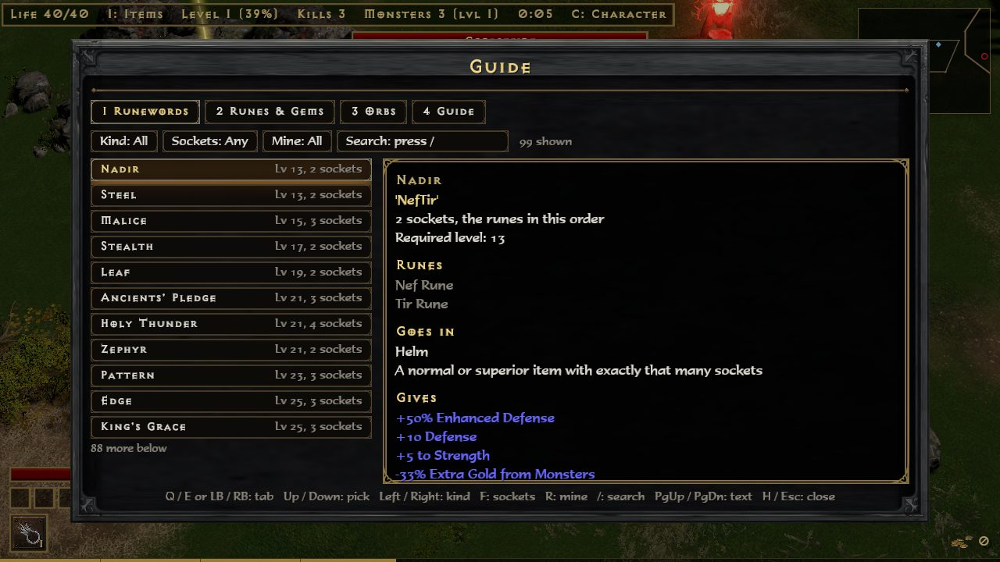

Keyboard, mouse and gamepad all work at the same time. In the game, H opens the Guide, whose first tab lists these controls for the mode you are in.
Both modes
Key
Does
WASD or arrows
Walk
Left mouse held
Run toward the cursor
+ / -
Zoom in and out
1-4
Drink from the belt
Esc
The menu; the run stands still
H
The Guide: controls, runewords, runes and gems, orbs, and the mode's pages
C
Character: stats and skills
Tab
The map
M
Mute
N
Damage numbers on or off
F3
Frame meter
Survivors
Skills cast themselves; you walk and pick cards. The run stands still while a hand of cards is up.
Key
Does
1 / 2 / 3 or a click
Take a card
R
Deal the cards again (a talent's reroll)
Space
Take the recommended card
G by a cave
Go in; hold G in the cave to leave it
T / I in the menu
Talents / Armory
Campaign
Skills cast themselves, unless the character was made with Classic casting (a choice on the New Character screen).
Key
Does
I
Inventory
T
Skill tree and stat points
E
Talk, pick up
F by the stash
Inventory and stash
V at a waypoint
Travel
G by a cave
Go in; hold G in the cave to leave it
P
Town portal: walk in, and back out to where you were
Enter or a click
Inventory: wear, take or put an item
Right click
Inventory: wear or take off; moves a charm in or out of the charm grid
Delete
Inventory: drop the item under the cursor
Classic casting
Key
Does
Left / right mouse
Cast the left / right skill
Shift held
Cast where you stand
F1-F8 or the wheel
Pick a skill
Item filter
The filter picks which items on the ground show their names, and marks the good ones with a border, a sound, a beam of light and a dot on the map. More on the Campaign page.
Key
Does
Alt held
Show the hidden items too
L
Switch the filter off for now, and on again
Options: Item Filter
Default, Strict, Custom or Off
Options: Edit Item Filter
Opens itemfilter.txt; saved changes show at once
Gamepad
Button
Does
Left stick or D-pad
Walk
Start
The menu (the Guide is on it)
Select
Character
A
Take, talk, pick up
B
Back; drink a potion
LB
The map
L3
Go into a cave; held, leave it
X / Y / B
Survivors: take a card, left to right
RB
Survivors: deal the cards again
R3
Survivors: take the recommended card
X
Campaign: inventory
Y
Campaign: skill tree
RB
Campaign: town portal
The Guide (H)
Tabs: Runewords, Runes & Gems, Orbs, and Guide (these controls and the mode's own pages). It also shows drop chances.

GuideThe Runewords tab, with the keys along the bottom.
Keyboard
Gamepad
Does
Q / E or 1-4
LB / RB
Change tab
Up / Down, W / S or the wheel
D-pad
Pick a row
Page Up / Page Down or the wheel over the text
LT / RT
Scroll the text
Left / Right, A / D
D-pad
Runewords: kind of item; Runes & Gems: runes or gems
F
X
Runewords: number of sockets
R
Y
Mine: runewords you hold a rune of, or can make
/ or a click on Search
Type a name or a rune
H, Esc or Backspace
B
Close
A runeword you can make right now is green.
Spell review (spells.bat)
The hero casts each skill over and over at a few dummies. Mark whether it looks right, as in Diablo (effect, animation, sound). Every mark is saved at once to spell_review.txt beside the exe; the next review starts at the first skill not yet marked. The file holds only the class, the skill, OK or WRONG and your note.
Keyboard
Gamepad
Does
Y
A
Looks right
N
B
Looks wrong: type what is off, then Enter (Esc: no note)
Right / Left
Next / previous skill
Tab / Shift+Tab
RB / LB
Next / previous class
Esc
Start
Quit
The .bat files
play.bat
Starts the game with a console window. If something goes wrong, the console shows why.
clips.bat
A run for recording: no death, a big horde, big spells.
spells.bat
The spell review, above.
check_d2r.bat
Checks the game can read your D2R install; writes d2r_check.txt. See the FAQ.